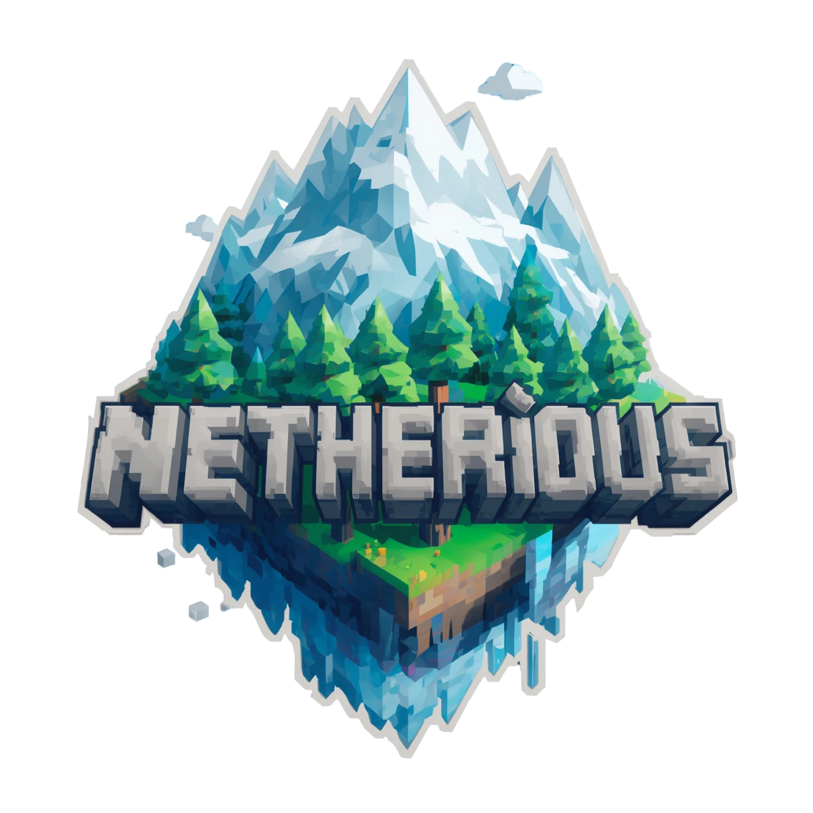

92
Local
131
Core
39
Server
262
Experiencia Netherious
💻 Local Only
92
🎬
animaciones
11
Animation_Overhaul-forge-1.20.x-1.3.1
HMI 4.2.5H1 1.20.1 - 1.20.4
citresewn-1.2.2+1.20.1
eatinganimation-1.20.1-5.1.0
gml-4.0.10-all
immersivedamageindicators-forge-1.0.0-1.20.1
immersivemessages-forge-1.0.18-1.20.1
pommel-held-items-1.4.2+1.20.1
txnilib-forge-1.0.24-1.20.1
waveycapes-forge-1.8.2-mc1.20.1
weaponmaster_ydm-forge-1.20.1-4.2.3
✨
particulas
10
Fog-forge-1.5.3-1.20.1
Perception-FORGE-0.1.4+1.20.1
coolrain-1.3.0-1.20.1
eg_particle_interactions-forge-1.20.1-1.0.0
explosiveenhancement-forge-1.20.1-1.1.0-client
fallingleaves-1.20.1-2.1.2
particular-1.21.10-NeoForge-1.3.1
pop-1.20.1-1.0.0
tempadwithshaders-1.20.1-1.0.0
windy-1.1.1+1.20-fabric
🎨
quality
44
AFKcamera-1.4.2+1.20.1
ArmorQuickSwap-v8.0.0-1.20.1-Forge
EffectDescriptions-v8.0.2-1.20.1-Forge
Forgematica-0.1.13-mc1.20.1
ForgematicaPrinter-0.1.0+mc1.20.1
ImmersiveUI-FORGE-0.3.0
Jade-1.20.1-Forge-11.13.2
JadeAddons-1.20.1-Forge-5.5.0
LeaveMyBarsAlone-v8.0.0-1.20.1-Forge
MRU-1.0.4+1.20.1+forge
MaFgLib-0.1.14-mc1.20.1
MouseTweaks-forge-mc1.20.1-2.25.1
Necronomicon-Forge-1.6.0+1.20.1
OctoLib-FORGE-0.5.0.1+1.20.1
OverflowingBars-v8.0.1-1.20.1-Forge
PickUpNotifier-v8.0.0-1.20.1-Forge
PuzzlesLib-v8.1.33-1.20.1-Forge
ShoulderSurfing-Forge-1.20.1-4.14.3
SmoothScrollingRefurbished+1.20-1.1.2
TravelersTitles-1.20-Forge-4.0.2
YungsApi-1.20-Forge-4.0.6
appleskin-forge-mc1.20.1-2.5.1
ash_api-forge-3.0.2+1.20.1
cinematiczoom-1.0.0k
clientsort-forge-2.1.2+1.20.1
cloth-config-11.1.136-forge
collective-1.20.1-8.12
cupboard-1.20.1-2.7
draggable_lists-mc1.20-1.0.1-rev.824b2f3
drippyloadingscreen_forge_3.0.12_MC_1.20.1
enhanced_boss_bars-1.20.1-1.0.0
entity_model_features_1.20.1-forge-3.0.1
entity_texture_features_1.20.1-forge-7.0.2
fancymenu_forge_3.7.0_MC_1.20.1
fancytoasts-forge-1.20.1-1.4.5
immersive-hotbar-1.0.4-1.20-1.20.4
jei-1.20.1-forge-15.20.0.128
journeymap-1.20.1-5.10.3-forge
konkrete_forge_1.8.0_MC_1.20-1.20.1
melody_forge_1.0.3_MC_1.20.1-1.20.4
polytone-1.20-3.5.17
shuffle-forge-9.0.0+1.20.1
tooltipoverhaul-forge-1.20.1-1.4.0
yet_another_config_lib_v3-3.6.6+1.20.1-forge
⚡
rendimiento
20
Clumps-forge-1.20.1-12.0.0.4
FastItemFrames-v20.1.5-1.20.1-Forge
Icterine-forge-1.20.0-1-1.3.0
adaptive_performance_tweaks_core_1.20.1-11.5.0
adaptive_performance_tweaks_items_1.20.1-11.5.0
colorwheel-forge-1.1.2+mc1.20.1
colorwheel_patcher-forge-1.0.4+mc1.20.1
cullleaves-forge-4.1.1+1.20.1
dynamiclights-v1.9-mc1.17-1.21.5-mod
embeddium-0.3.31+mc1.20.1
entityculling-forge-1.9.3-mc1.20.1
ferritecore-6.0.1-forge
immersive_optimization-forge-1.20.1-0.1.0
memoryleakfix-forge-1.17+-1.1.5
midnightlib-forge-1.9.2+1.20.1
modernfix-forge-5.25.2+mc1.20.1
oculus-mc1.20.1-1.8.0
radium-mc1.20.1-0.12.4+git.26c9d8e
spark-1.10.53-forge
vanillin-forge-1.20.1-1.1.3
🔊
sonidos
7
PresenceFootsteps-1.20.1-1.9.1-beta.1
Sounds-2.2.1+1.20.1+forge
biomemusic-1.20.1-3.5
illagerraidmusic-1.20-1.20.1-1.2
reactivemusic-1.1.0+1.20.1
sound-physics-remastered-forge-1.20.1-1.5.1
sound_physics_perfected-1.15+1.20.1-forge
🌍 Netherious Core
131
🐾
Criaturas & Fauna Salvaje
15
CNB-1.20.1-1.6.1
adorablehamsterpets-3.4.3-1.20.1+forge
astemirlib-1.20.1-1.25
companions-forge-1.20.1-1.2.1
copperagebackport-forge-1.20.1-0.1.4
ghosts-forge-1.20.1-1.2.2
mpekka-0.4-1.20.1
primal-1.0.6+1.20.1
ror-0.59-forge-1.20.1
species-3.5
tameablebeasts-1.20.1-7.1.3
thedawnera-1.20.1-0.642
valarian_conquest 4.2-forge-1.20.1
wab-1.20.1-1.4.1
wonderoussea-1.0.4-forge-1.20.1
💀
Enemigos & Hostilidad
9
IllagerInvasion-v8.0.7-1.20.1-Forge
MutantMonsters-v8.0.8-1.20.1-Forge
UndeadUnleashed-1.2.2-forge-1.20.1
blighted_beasts-1.20.1-1.5.3
clanging-howl-[Forge]_1.20.1_1.0.4
crypticfoes-1.0.3
dweller_dweller-3.13.1
mythsandlegends-0.0.8.5
warden-with-loot-2.2
🏰
Estructuras & Mazmorras Épicas
5
idas_forge-1.12.1+1.20.1
integrated_api-1.5.1+1.20.1-forge
integrated_cataclysm_forge-1.0.5+1.20.1
integrated_stronghold-1.1.2+1.20.1-forge
structure_gel-1.20.1-2.16.2
📦
Herramientas & Vehiculos
15
MagnumTorch-v8.0.2-1.20.1-Forge
RPG_Style_More_Gems_1.0_1.20.1
RPG_Style_More_Weapons_R_1.0.3_Forge_1.20.1
WaystoneSpawnpoints-1.20.1-1.0
WaystonesTeleportPets-1.20-1.20.1--1.2
alekiNiftyShips-FORGE-1.20.1-1.0.14
clockwork-forge-1.20.1-1.0.2
grapplingHookMod-Reforged-1.2
justhammers-forge-20.1.5+mc1.20.1
orevolution-1.20.1-3.2.4
shieldexp-forge-1.20.1-1.3.5
tempad-forge-1.20.1-2.3.4
travelersbackpack-forge-1.20.1-9.1.46
waystones-forge-1.20.1-14.1.18
waystonescooldown-1.0.0
📦
Jefes & Combate Avanzado
14
Dungeon Now Loading-forge-1.20.1-2.11
L_Enders_Cataclysm-3.16
boss_checklist-forge-3.1.3
bossesrise-1.20.1-forge-1.0.9.2b
bossesunleashed-1.0.3
cinematiccataclysm-1.0.0-1.20.1
create_cataclysm-0.1.0-forge-1.20.1
fdbosses-3.1.0.1-1.20.1
fdlib-1.0.7-1.20.1
illageandspillagerespillaged-1.2.8
legendarymonsters-LM_DEV_10 MC 1.20.1
lionfishapi-2.4
wither_spawn_animation-1.6-forge-1.20.1
witherreincarnated-1.20.1-1.0.5
🌍
Mundos & Dimensiones Alternas
10
Quark-4.0-462
Zeta-1.0-31
blueprint-1.20.1-7.1.3
create_enlightend-1.0.0-forge-1.20.1
enlightend-5.0.14-1.20.1
nether-s-exoticism-1.20.1-1.2.9
nethers_exorcism_reborn-1.1.3Beta
phantasm-1.0.1
spelunkery-1.20.1-0.3.16-forge
unusualend-2.3.0-forge-1.20.1
📦
Progresión de Personaje
14
FathomlessCrimson-1.1.3bugfix
NexusLayer-1.0.9
ParCool-1.20.1-3.4.2.0
The_Graveyard_3.1_(FORGE)_for_1.20.1
Tyz's skills 4.3-1.20.1
as_you_wish-1.3.1-forge-1.20.1
bc_particle-0.0.3-forge-1.20.1
bettercombat-forge-1.9.0+1.20.1
caelus-forge-3.2.0+1.20.1
create_crafting_of_terramity-0.1
knightquest-forge-1.20.1-1.9.3
lootr-forge-1.20-0.7.35.94
sweety_archaeology-1.0.9c-forge-1.20.1
terramity-0.9.8-forge-1.20.1
📦
Tecnologia
25
ad_astra-forge-1.20.1-1.15.20
ad_astra_more_structures-1.0.0
bits_n_bobs-0.0.41
botarium-forge-1.20.1-2.3.4
create-1.20.1-6.0.8
create-new-age-1.1.7f+forge-mc1.20.1
create_ad_astra_recipes-1.0.0-forge-1.20.1
create_bb-1.0.7-1.20.1-Forge
create_connected-1.1.10-mc1.20.1-all
create_jetpack-forge-4.4.6
create_jetpack_curios-1.2.0-forge-1.20.1
create_ranged-1.1.0-forge-1.20.1
create_ratatouille-1.20.1-1.3.8
create_simple_ore_doubling-1.6.0-forge-1.20.1
createaddition-1.20.1-1.3.3
createcontraptionterminals-1.20-1.2.0
createdeco-2.0.3-1.20.1-forge
createnuclear-1.3.1-forge
createornithopterglider-1.0.2-1.20.1
cyberspace 2.2.0 (F1.20.1)
ethium_1.20.1_V4
morelights-0.2.1
oil_well_yeeter-0.4-1.20.1
tfmg-1.0.2f
toms_storage-1.20-1.7.1
📦
Vanilla+ & Calidad de Vida
24
Cardiac-FORGE-0.5.3.2+1.20.1
FarmersDelight-1.20.1-1.2.9
Ping-Wheel-1.12.0-forge-1.20.1
VisualWorkbench-v8.0.1-1.20.1-Forge
another_furniture-forge-1.20.1-3.0.4
baguettelib-1.20.1-Forge-1.1.5
biggerstacks-1.20.1-1.0.4-all
booklinggear-1.20.1-3.13
corpse-forge-1.20.1-1.0.23
corpsecurioscompat-1.20.1-Forge-3.1.3
cratedelight-25.09.22-1.20-forge
eso-forge-1.20.1-1.2.2-all
forge-dungeonsdelight-1.20.1-1.2.10
forge-runiclib-1.20.1-4.3.8
letsdo-vinery-forge-1.4.41
mcw-mcwstairs-1.0.2-mc1.20.1forge
minervillager-1.20.1-5.6.1
pet_cemetery-1.20.1-2.0.0
polymorph-forge-0.49.10+1.20.1
shutter-2.2.0-1.20.1
starcatcher-2.1.3-FORGE-1.20.1
storagedelight-25.12.09-1.20-forge
supplementaries-1.20-3.1.41
trashslot-forge-1.20-15.1.1
☁️ Server Only
39
🏰
dungeon
12
DungeonsAriseSevenSeas-1.19.2-1.0.2-forge
Epic Villages v1.1.0 (1.20+)
Epic Witch Huts v1.1.0 (1.20+)
YungsBetterEndIsland-1.20-Forge-2.0.6
YungsBetterNetherFortresses-1.20-Forge-2.0.6
awesomedungeonend-forge-1.20.1-3.1.1
awesomedungeonnether-forge-1.20.1-3.1.1
dungeons-and-taverns-ancient-city-overhaul-1 [Forge]
end_villager_outpost-1.0.0-forge-1.20.1
libraryferret-forge-1.20.1-4.0.0
lukis-woodland-mansions-v.1.0
structure_gel-1.20.1-2.16.2
🎨
quality
11
Boss Music Mod 1.20.x v1.2.1
Mini-boss Boss Bars 1.20.1 1.0.142
almostunified-forge-1.20.1-0.10.1
create-renewable-egapples-1.0.0
create-renewable-netherite-2.0.0
doubledoors-1.20.1-7.2
edf-remastered-4.3
hero-proof-5.2.1
inventorytotem-1.20.1-3.4
nocreeperexplosion-1.20.x-1.0.1
treeharvester-1.20.1-9.1
⚡
rendimiento
16
Chunky-1.3.146
Clumps-forge-1.20.1-12.0.0.4
Icterine-forge-1.20.0-1-1.3.0
LeavesBeGone-v8.0.0-1.20.1-Forge
Necronomicon-Forge-1.6.0+1.20.1
YouShallNotSpawn-forge-1.20.x-2.0.2
almanac-1.20.x-forge-1.0.2
darktimer-forge-1.20.1-1.0.9
ferritecore-6.0.1-forge
getittogetherdrops-forge-1.20-1.3
immersive_optimization-forge-1.20.1-0.1.0
incontrol-1.20-9.4.5
letmedespawn-1.20.x-forge-1.5.0
memoryleakfix-forge-1.17+-1.1.5
modernfix-forge-5.25.2+mc1.20.1
structure_layout_optimizer-forge-1.0.11